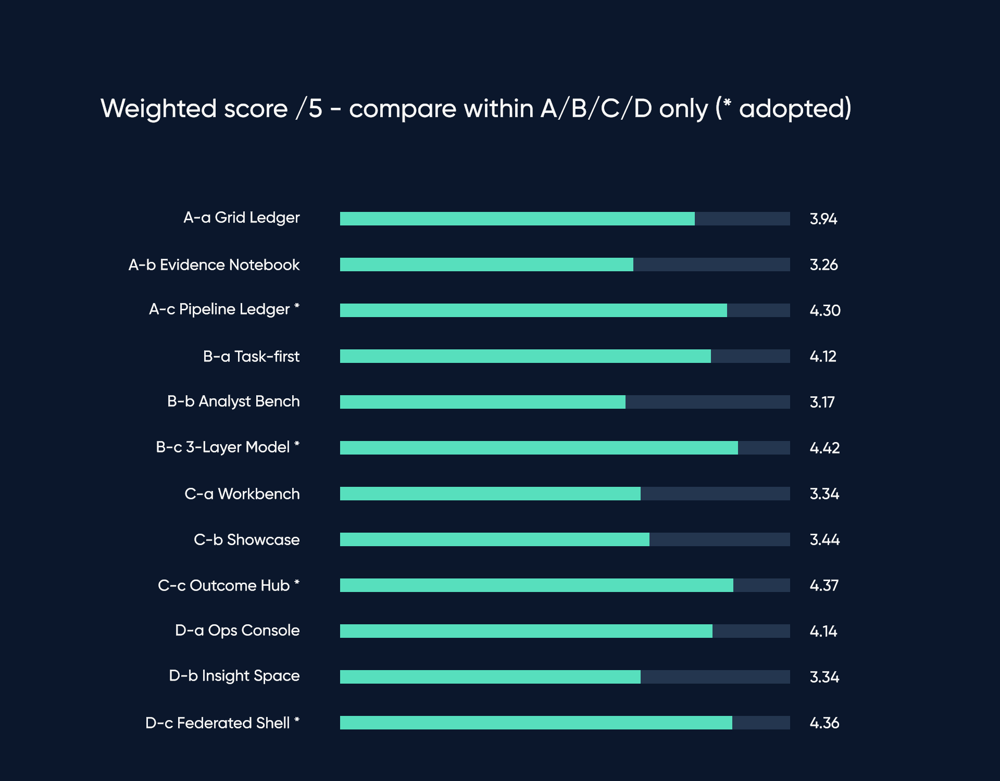

採用案のプロトタイプ（4画面＋部品一覧）
A 研究室内部用
Pipeline Ledger：パイプライン＋台帳（加重合計 4.30）
B 国家規模・公共
段階的開示 3層レイヤー型（加重合計 4.42）
C 収益追求型の商用
アウトカム・ハブ（加重合計 4.37）
D 大企業品質
Federated Shell：プラットフォーム統合型（加重合計 4.36）
成果物
| # | 成果物 | ファイル |
|---|---|---|
| 1 | 世界の優良UI・UX事例 調査台帳（48件） | research-ledger.md |
| 2 | 4分類のUI・UX設計原則 | design-principles.md |
| 3 | 12種類のUIコンセプト比較 | concepts-comparison.md |
| 4 | 推奨デザインシステム | recommended-design-system.md |
| 5 | プロトタイプ（上記4件、Figma ボード） | Figma ボード |
| 6 | 既存アプリへの適用計画 | application-plan.md、existing-projects-analysis.md |
12案の加重評価
重みは分類ごとに異なるため、点数は同じ分類の中でだけ比べてください。グラフは Picsart Media Studio で描画しました（動画版）。
